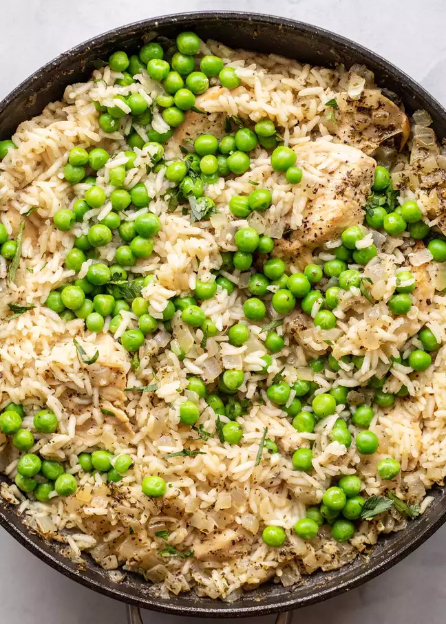

Season your sliced chicken with salt and pepper. Heat the olive oil in a large (at least 12-inch) skillet over medium-high heat. Add the chicken and cook for 3 minutes per side, getting a decent sear on both sides. It's okay at this point if your chicken isn't cooked all the way through.
Remove chicken from the skillet and add onions and garlic. Cook for 2-3 minutes, softening veggies. Add dried oregano and basil to the skillet and stir together.
Stir in the rinsed white rice and nestle chicken pieces back in the skillet. Then add 3 cups of the chicken stock and stir gently to make sure chicken stock is evenly distributed. Bring to a simmer, turn heat down to low, cover, and cook for 15 minutes.
After 15 minutes, check the skillet. If the rice is tender and the skillet is dry, then the dish is ready to serve. If the rice isn't quite done and the skillet is dry, add another 1/2 cup of broth, re-cover the skillet, and continue to simmer for a few minutes. If the rice is cooked but there is still some stock in the skillet, uncover the pan and let the extra stock cook off for a few minutes. When the rice seems just about done, add the frozen peas to the skillet. They will thaw quickly!
Garnish finished chicken and rice skillet with parsley.